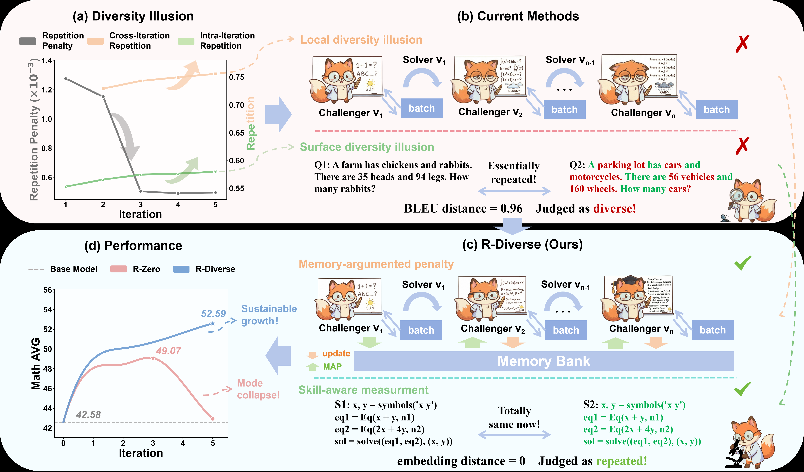
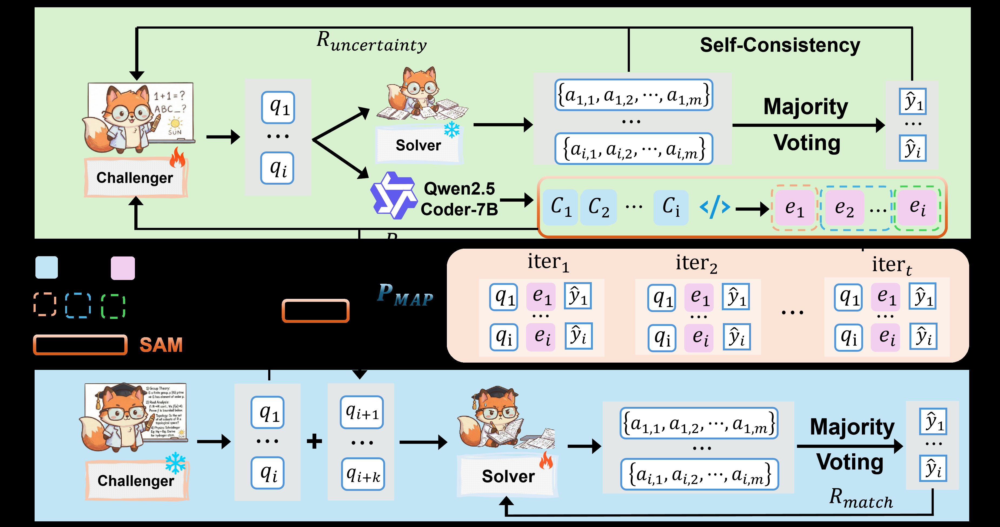
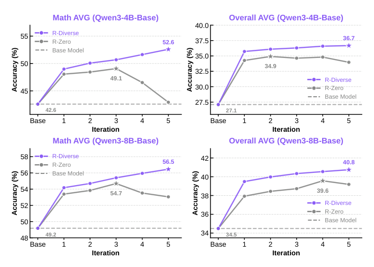
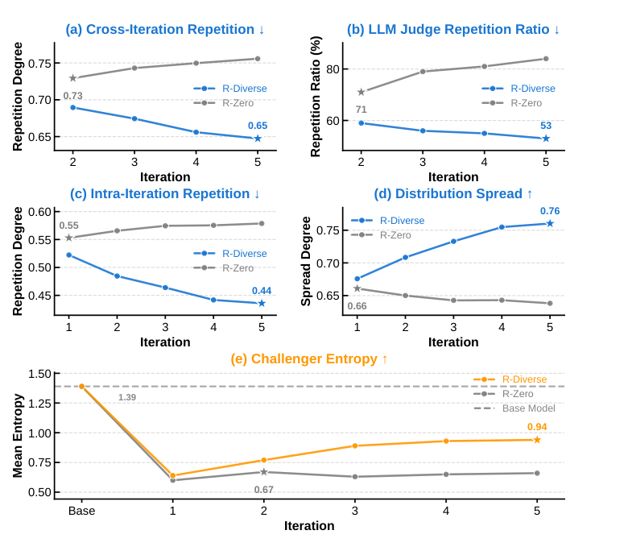

R-Diverse: Mitigating Diversity Illusion in Self-Play LLM Training
R-Diverse 指出 self-play LLM training 的核心脆弱点不是“没有生成足够多题”，而是训练信号出现 Diversity Illusion：表面看起来不同，跨迭代或技能层面却反复训练同一类模式。论文用 Memory-Augmented Penalty (MAP) 约束历史重复，用 Skill-Aware Measurement (SAM) 把自然语言题目映射成 solver-level Python program 后再比较技能相似度，从而让 Qwen3-4B/8B 在 5 轮 Challenger-Solver 自博弈中保持持续提升。
1. 研究动机：self-play 为什么早期涨、后期塌
R-Zero 一类框架把 reasoning LLM 训练成 Challenger-Solver loop：Challenger 生成接近 Solver 能力边界的问题，Solver 用这些自生成问题继续训练。问题是，这种循环经常前几轮有效，随后 plateau 或 degradation。本文的诊断是：现有 diversity constraint 管错了对象，只在局部 batch 和表面文本上惩罚重复，没有保证 Solver 真正看到新的 reasoning skills。
Local Diversity Illusion
如果重复惩罚只看当前 batch，Challenger 可以在不同 iteration 之间循环回到历史高 reward 题型；batch 内不重复，历史上却重复。
Surface Diversity Illusion
BLEU 等 token-level metric 认为题面不同，但 Solver 需要的解题程序几乎一致，例如不同叙事包装下的同构方程组或 CRT 问题。
论文主张
self-play 的 diversity 应该定义在训练信号和 skill space 上：历史是否重复、题目需要的 reasoning procedure 是否重复。

2. 数学表示、建模与算法流程
R-Diverse 没有推翻 R-Zero 的 Challenger-Solver 框架，而是在 Challenger reward 中加入跨迭代 memory penalty，并把 within-batch repetition penalty 的相似度函数从 BLEU 替换成 SAM embedding。Solver 训练仍用 self-generated curriculum 和 pseudo-label，但加入 memory replay 来缓解分布持续漂移。
2.1 R-Zero 式 self-play 基础
Challenger $C_\theta$ 生成问题 $q$，冻结的 Solver $S_{\phi_{t-1}}$ 对每个问题采样 $K$ 个答案。将答案按等价性分成 $G=\{G_1,\ldots,G_k\}$，一致性分数为：
$$s(q)=\frac{\max_{G\in\mathcal{G}} |G|}{K},\qquad s(q)\in[0,1].$$uncertainty reward 在 $s(q)=0.5$ 附近最大，因为这表示问题既不是太容易也不是完全不可解：
$$R_{\mathrm{uncertainty}}(q)=\min(s(q),1-s(q)).$$原始 Challenger reward 是：
$$R_C(q)=R_{\mathrm{uncertainty}}(q)-\lambda\cdot P_{\mathrm{rep}}(q).$$R-Zero 的 $P_{\mathrm{rep}}$ 基于当前 batch $B$ 内的 BLEU distance 聚类。若 $q_i$ 属于 cluster $C_i$，则：
$$P_{\mathrm{rep}}(q_i,B)=\frac{|C_i|}{|B|}.$$Challenger 生成
在当前 Solver 上采样候选问题，目标是接近 uncertainty sweet spot。
SAM 抽象
把题目转成 canonical Python solver code，再用 code encoder 得到 skill embedding。
MAP 惩罚
新题和 memory bank 中历史题的 max/mean cosine similarity 超阈值时扣分。
Solver 训练
用当前题 + 历史 replay 样本训练，维持旧技能并学习扩展 curriculum。
2.2 MAP：Memory-Augmented Penalty
维护 memory bank $\mathcal{M}$，其中存放历史有效问题的 embedding。第 $t$ 轮问题集为 $Q_t$，embedding 函数为 $\phi(q)$，有效题目满足论文实现中的 uncertainty filter，例如 $0.3\le s(q)\le0.8$：
$$\mathcal{M}_{t+1}\leftarrow \mathcal{M}_t\cup\{\phi(q)\mid q\in Q_t,\mathrm{valid}(q)\}.$$MAP 由两个项组成。$P_{\max}$ 防止和某个历史样本直接撞车：
$$P_{\max}(q,\mathcal{M})=\max_{e\in\mathcal{M}}\cos(\phi(q),e).$$$P_{\mathrm{mean}}$ 防止进入历史分布的密集区域：
$$P_{\mathrm{mean}}(q,\mathcal{M})=\frac{1}{|\mathcal{M}|}\sum_{e\in\mathcal{M}}\cos(\phi(q),e).$$最终 penalty 只在超过容忍阈值时激活：
$$P_{\mathrm{MAP}}(q,\mathcal{M})=\gamma\cdot[P_{\max}(q,\mathcal{M})-\tau_{\max}]_+ +(1-\gamma)\cdot[P_{\mathrm{mean}}(q,\mathcal{M})-\tau_{\mathrm{mean}}]_+.$$论文设置 $\gamma=0.5$，同时使用 memory replay：每轮 Solver 训练集混入比例 $\rho=0.3$ 的历史高质量 question-answer pairs。
2.3 SAM：Skill-Aware Measurement
SAM 用两步把题面映射到 skill space。第一步是 representation abstraction：用 Qwen2.5-Coder-7B 在 temperature 0 下将自然语言题 $q$ 转成 canonical solver-level Python function $\mathrm{Code}(q)$，要求抽取数学关系并匿名化变量。第二步是 embedding-based similarity：
$$\phi_{\mathrm{SAM}}(q)=\mathrm{Encoder}(\mathrm{Code}(q)),$$其中 Encoder 是 Jina-Code-Embeddings-1.5B。相似度用 cosine similarity。这个设计让“鸡兔同笼”和“车辆/车轮”类题目虽然 BLEU distance 高，但 code structure 和 embedding 相近，从而被判为重复技能。
2.4 R-Diverse objective
最终 Challenger reward 同时平衡难度、iteration 内技能多样性、跨历史技能多样性：
$$R_{\mathrm{total}}(q)=R_{\mathrm{uncertainty}}(q)-\alpha P_{\mathrm{rep}}(q,B;\phi_{\mathrm{SAM}})-\beta P_{\mathrm{MAP}}(q,\mathcal{M};\phi_{\mathrm{SAM}}).$$Solver 仍优化二值 reward $R_S(a,y)=\mathbb{I}(\mathrm{answer}(a)=\hat y)$，$\hat y$ 来自 majority voting pseudo-label。两个 agent 均用 GRPO，不需要 critic。

3. 实验设计与复现细节
实验基于 EasyR1，base models 是 Qwen3-4B-Base 和 Qwen3-8B-Base。每个 evolution iteration 中 Challenger 训练 5 steps，Solver 训练 15 steps。评估覆盖 7 个数学推理 benchmark 和 3 个通用推理 benchmark；AMC/AIME 按 prior work 用 mean@32，其余报告 greedy pass@1。
训练实现
- Framework: EasyR1
- Optimization: GRPO for Challenger and Solver
- Precision / acceleration: BF16 + FlashAttention 2
- Hardware: 8 x NVIDIA H20 GPUs
评估基准
- Math: AMC, Minerva, MATH, GSM8K, Olympiad-Bench, AIME25, AIME24
- General: SuperGPQA, MMLU-Pro, BBEH
- Baselines: Base Model, R-Zero, Absolute Zero, SPIRAL, Socratic-Zero
| 模块 | 设置 |
|---|---|
| Solver training | global batch size 128, learning rate $1\times10^{-6}$, weight decay $1\times10^{-2}$, KL coefficient $\lambda_{\mathrm{KL}}=1\times10^{-2}$, max steps 15, rollouts 5, temperature 1.0, top-p 0.99 |
| Challenger training | global batch size 128, learning rate $1\times10^{-6}$, weight decay $1\times10^{-2}$, KL coefficient $\lambda_{\mathrm{KL}}=1\times10^{-2}$, max steps 5, rollouts 4, temperature 1.0, top-p 0.99 |
| MAP / SAM | $\alpha=1.0$, $\beta=1.0$, $\gamma=0.5$, $\tau_{\max}=0.5$, $\tau_{\mathrm{mean}}=0.25$, memory replay ratio $\rho=0.3$ |
| SAM models | Code generation: Qwen2.5-Coder-7B at temperature 0; code embedding: Jina-Code-Embeddings-1.5B |
| Prompts | Solver prompt 要求 step-by-step 并把最终答案放入 \\boxed{}；Challenger prompt 要求生成非平凡竞赛数学题并输出 <question> 与 boxed final answer；SAM prompt 要求输出无注释的 solver Python function。 |
Appendix A 给出了完整 hyperparameters 和 prompt templates。这里保留复现实验必须先固定的配置；prompt 原文很长，页面只提炼约束，详见论文 Appendix A.2。
多样性分析指标
Cross-Iteration Repetition 同时结合历史 top collision 和历史分布平均 overlap：
$$\mathrm{Cross\mbox{-}Iter\mbox{-}Rep}(Q_t,\mathcal{M})=\frac{1}{|Q_t|}\sum_{q\in Q_t}\left(\frac{1}{2}\max_{e\in\mathcal{M}}\cos(\phi(q),e)+\frac{1}{2}\cdot\frac{1}{|\mathcal{M}|}\sum_{e\in\mathcal{M}}\cos(\phi(q),e)\right).$$Intra-Iteration Repetition 是同一轮问题的平均 pairwise cosine similarity：
$$\mathrm{Intra\mbox{-}Iter\mbox{-}Rep}(Q_t)=\frac{1}{|Q_t|}\sum_{q_i\in Q_t}\frac{1}{|Q_t|-1}\sum_{q_j\in Q_t,j\ne i}\cos(\phi(q_i),\phi(q_j)).$$Distribution Spread 度量 embedding 到 centroid 的平均距离：
$$\mathrm{Spread\mbox{-}Degree}(Q_t)=\frac{1}{|Q_t|}\sum_{q\in Q_t}\|\phi(q)-\bar\phi\|_2,\qquad \bar\phi=\frac{1}{|Q_t|}\sum_{q\in Q_t}\phi(q).$$Challenger Entropy 对 $N$ 个 rollout 的 token-level next-token entropy 取平均：
$$\mathrm{Entropy}=\frac{1}{N}\sum_{n=1}^{N}\frac{1}{L_n}\sum_{l=1}^{L_n}H(p(\cdot|t_{4. 实验结果与核心结论
R-Diverse 的结果分三层：第一，主表显示它在 4B/8B 两个尺度都超过 prior self-play baselines；第二，五轮曲线显示它没有像 R-Zero 那样后期 collapse；第三，diversity analysis 直接验证 MAP/SAM 降低历史重复、降低同轮重复、恢复 Challenger entropy。
| Model / Method | Math AVG | Overall AVG | AMC | Minerva | MATH | GSM8K | Olympiad | AIME25 | AIME24 | SuperGPQA | MMLU-Pro | BBEH |
|---|---|---|---|---|---|---|---|---|---|---|---|---|
| Qwen3-4B Base | 42.58 | 27.10 | 45.70 | 38.24 | 68.20 | 87.79 | 41.04 | 6.15 | 10.94 | 20.88 | 37.38 | 7.57 |
| Absolute Zero | 46.42 | 33.61 | 52.45 | 41.96 | 76.20 | 89.34 | 42.56 | 10.20 | 12.20 | 27.10 | 52.60 | 8.30 |
| SPIRAL | 47.00 | 34.22 | 57.50 | 42.40 | 76.40 | 91.00 | 38.40 | 10.00 | 13.30 | 27.10 | 53.20 | 9.57 |
| R-Zero | 49.07 | 34.64 | 57.27 | 52.94 | 79.60 | 92.12 | 44.59 | 4.27 | 12.71 | 27.55 | 51.53 | 10.42 |
| R-Diverse* (3 iters) | 50.68 | 36.30 | 59.06 | 56.62 | 79.00 | 92.27 | 45.19 | 6.25 | 16.35 | 28.84 | 54.91 | 10.77 |
| R-Diverse (5 iters) | 52.59 | 36.68 | 60.23 | 59.56 | 78.80 | 92.34 | 46.96 | 11.04 | 19.17 | 28.54 | 55.24 | 10.35 |
| Qwen3-8B Base | 49.18 | 34.49 | 51.95 | 50.00 | 78.00 | 89.08 | 44.74 | 16.67 | 13.85 | 28.33 | 51.80 | 8.63 |
| Absolute Zero | 52.68 | 38.97 | 57.89 | 57.90 | 76.60 | 92.00 | 47.80 | 18.20 | 18.40 | 31.89 | 60.50 | 10.80 |
| R-Zero | 54.69 | 38.73 | 61.67 | 60.66 | 82.00 | 94.09 | 48.89 | 19.17 | 16.35 | 31.38 | 58.23 | 10.60 |
| Socratic-Zero | 56.10 | 39.15 | 63.70 | 52.40 | 81.20 | 87.30 | 55.10 | 24.60 | 28.40 | 30.10 | 60.90 | 9.50 |
| R-Diverse* (3 iters) | 55.40 | 40.34 | 59.30 | 63.24 | 80.60 | 94.31 | 49.19 | 17.71 | 23.44 | 32.56 | 61.49 | 11.92 |
| R-Diverse (5 iters) | 56.46 | 40.75 | 66.02 | 66.18 | 82.20 | 94.39 | 49.78 | 12.19 | 24.48 | 32.52 | 61.79 | 12.23 |
Table 1 重建。R-Diverse* 是 3 轮训练，用来和 baseline 的训练轮数对齐；完整 R-Diverse 跑 5 轮。论文标注 best / second best，这里保留主要数值。


| Method | Math AVG | Delta vs full | 解释 |
|---|---|---|---|
| R-Diverse (Full) | 52.59 | - | 完整 MAP + SAM + memory replay。 |
| w/o MAP | 49.62 | -2.97 | 最大跌幅，说明跨历史记忆约束是关键。 |
| w/o Max- & Mean-Similarity Penalty | 49.88 | -2.71 | 基本移除 MAP 的排斥作用。 |
| w/o Max-Similarity Penalty | 50.60 | -1.99 | 直接历史样本碰撞控制缺失。 |
| w/o Mean-Similarity Penalty | 50.64 | -1.95 | 历史密集区域回流控制缺失。 |
| w/o Memory Replay | 51.18 | -1.41 | 分布持续移动时 Solver 更容易遗忘旧技能。 |
| w/o SAM | 50.50 | -2.09 | Surface Diversity Illusion 没被解决。 |
| w/o Representation Abstraction | 50.79 | -1.80 | 不转 solver-level code，题面噪声仍然干扰相似度。 |
| w/o Embedding-based Similarity Computation | 51.05 | -1.54 | 只看代码字符串或表面结构不够稳健。 |
Table 2 重建。所有 ablation 都在 Qwen3-4B-Base 上做。
| Dataset | Base Solver | Iter 1 | Iter 2 | Iter 3 | Iter 4 | Iter 5 |
|---|---|---|---|---|---|---|
| $D_{\mathrm{Iter}\ 1}$ | 47.5 | 55.0 | 57.5 | 58.5 | 58.0 | 60.5 |
| $D_{\mathrm{Iter}\ 2}$ | 44.0 | 50.5 | 54.0 | 52.5 | 56.5 | 55.0 |
| $D_{\mathrm{Iter}\ 3}$ | 46.5 | 47.5 | 49.5 | 51.5 | 53.0 | 56.5 |
| $D_{\mathrm{Iter}\ 4}$ | 40.0 | 43.5 | 44.0 | 48.0 | 51.5 | 51.0 |
| $D_{\mathrm{Iter}\ 5}$ | 39.0 | 41.0 | 39.5 | 43.0 | 47.0 | 50.5 |
Table 3 重建。每个 $D_{\mathrm{Iter}\ k}$ 是第 $k$ 轮 Challenger 抽样 200 个问题，用 GPT-4o 得到 ground-truth labels。固定 Solver 面对更晚 iteration 的问题通常 pass rate 更低，说明 curriculum 变难；目标 Solver 的 diagonal 大致维持在 50% 附近，说明 MAP/SAM 没破坏 uncertainty targeting。
数学推理增益最大
4B Math AVG 提升 +10.01，8B 提升 +7.28。Overall AVG 也提升，但论文指出 gains smaller，原因可能是 self-play curriculum 主要在数学域生成。
AIME25 不总是单调
4B AIME25 第 4 轮达到 16.04 后第 5 轮为 11.04；8B AIME25 从 base 16.67 到第 5 轮 12.19。这提醒我们 Math AVG 单调不代表每个高难、低样本 benchmark 都单调。
5. Figure / Table 导航
PDF 中 Figure 1/2 作为内嵌图片抽取成功；Figure 3/4 是页面级裁剪。关键结果表已在上文重建。Appendix G 的案例表主要用于解释 Surface Diversity Illusion，这里保留导航和代表性结论。
| 编号 | 位置 | 内容 | 页面处理 |
|---|---|---|---|
| Figure 1 | Page 2 | Diversity Illusion 概览、Local/Surface failure modes、R-Diverse 改进与性能曲线。 | 已抽取原图并嵌入。 |
| Figure 2 | Page 4 | R-Diverse framework：Challenger training、SAM、memory bank、Solver training。 | 已抽取原图并嵌入。 |
| Figure 3 | Page 7 | 不同模型尺度和指标下的 5 轮 performance trajectory。 | 使用页面裁剪图。 |
| Figure 4 | Page 7 | Cross-iteration / intra-iteration / policy dynamics 的 diversity analysis。 | 使用页面裁剪图。 |
| Table 1 | Page 6 | 10 个 benchmark 上的主结果。 | 已重建为 HTML 表格。 |
| Table 2 | Page 6 | MAP/SAM component ablation。 | 已重建为 HTML 表格。 |
| Table 3 | Page 8 | Cross-iteration curriculum evaluation。 | 已重建为 HTML 表格。 |
| Table 4/5 | Page 17/18 | Qwen3-4B/8B 每轮数学 benchmark 详细结果。 | 在结果段落中总结关键趋势。 |
| Table 6-8 | Page 18-20 | Number theory、sequence、combinatorial counting 题目随 iteration 演化。 | 作为 qualitative case analysis 使用。 |
| Table 9-11 | Page 20-21 | Surface Diversity Illusion 的重复题示例：改写、参数变化、叙事包装。 | 在 critique 和 takeaways 中引用结论。 |
6. 复现清单
这篇论文比许多 self-play 论文更可复现：给出了代码地址、训练框架、base models、GPU、BF16/FlashAttention、hyperparameters、prompts、diversity metrics 和 baseline details。不过严格复现实验仍然依赖大算力、多轮 GRPO、SAM code generation/embedding 管线以及 GPT-4o judge。
必须准备
- Qwen3-4B-Base 或 Qwen3-8B-Base
- EasyR1 / GRPO training stack
- 8 x NVIDIA H20 级别资源
- Qwen2.5-Coder-7B for SAM code abstraction
- Jina-Code-Embeddings-1.5B for code embeddings
容易偏离
- answer equivalence / majority voting 的实现细节
- uncertainty filter 里 valid questions 的边界
- memory bank 的采样、去重、容量和 replay 实现
- LLM-as-judge 重复判断的模型版本和 prompt 漂移
验证顺序
- 先复现 R-Zero baseline 的 3 轮曲线
- 单独接入 SAM 观察 intra-iteration repetition
- 再接入 MAP 观察 cross-iteration repetition
- 最后加 memory replay 比较 forgetting
| 复现实验 | 最低目标 | 成功判据 |
|---|---|---|
| MAP-only ablation | 在相同 $\phi_{\mathrm{SAM}}$ 下比较 $P_{\max}$、$P_{\mathrm{mean}}$、二者组合。 | 能观察到 w/o MAP 接近 Table 2 的约 2-3 point 下降。 |
| SAM vs BLEU | 构造 Table 9-11 类同构题库，比较 BLEU 与 code embedding similarity。 | SAM 能把改写、参数替换、叙事包装问题聚到相近区域。 |
| Memory replay | 固定 MAP，开关 replay ratio $\rho=0.3$。 | w/o replay 性能下降且旧 iteration 题集 pass rate 更差。 |
| 5-iteration sustainability | 跑 5 轮 Challenger-Solver，并记录 Math AVG / Overall AVG。 | R-Diverse 曲线比 R-Zero 更少后期回落，Challenger entropy 不长期低迷。 |
7. Reviewer Critique
这篇论文的贡献不是一个更复杂的 RL objective，而是抓住 self-play training 的 measurement mismatch：优化目标认为 diverse，Solver 接收到的技能训练却重复。作为 reviewer，我会给较高的方向分，但要求作者补更多跨域和系统细节。
Strengths
- Failure mode 定义清楚：Local Diversity Illusion 和 Surface Diversity Illusion 分别对应 scope mismatch 与 metric mismatch。
- MAP 和 SAM 都是直接针对 diagnosis 的 intervention，不是堆叠无关技巧。
- 实验覆盖两种模型尺度、10 个 benchmarks、component ablation、diversity metrics、curriculum preservation。
- Appendix 给出 hyperparameters、prompt templates、metric formulas 和 qualitative cases，有助于复核。
Weaknesses
- SAM 强依赖 Python code 作为 semantic bottleneck，适合数学和程序化推理，不一定适合开放问答、偏好对齐、多模态或工具使用。
- 代码生成模型和 code embedding model 的误差没有系统校准；如果 Code(q) 错抽象，penalty 会误伤真正新题或漏掉重复题。
- General benchmarks 的 gains 较小，且训练 curriculum 主要数学化，跨域 transfer 证据有限。
- GPT-4o judge 用于 repetition ratio 和 cross-iteration label 获取，带来闭源依赖和版本漂移。
Missing Ablations
- 不同 code generator：Qwen2.5-Coder-7B vs larger/smaller coders。
- 不同 embedding model：Jina-Code-Embeddings-1.5B vs text embedding / AST features。
- memory bank capacity、sampling strategy、time decay、nearest-neighbor retrieval 的影响。
- $\tau_{\max}$、$\tau_{\mathrm{mean}}$、$\rho$ 的 sensitivity sweep。
- 把 SAM 用在 non-math self-play domains 的失败边界。
Failure Modes
- Challenger 可能学会生成能让 SAM code abstraction 失真的题面，从而绕过 penalty。
- 过强 MAP 会推着模型探索稀疏但低质量的题型，需要和 uncertainty reward 保持平衡。
- Replay ratio 固定为 0.3 未必适配所有任务；旧题 replay 太多可能抑制新技能学习。
- skill diversity 不等于 answer correctness diversity，仍可能训练出新颖但不可验证或伪难题。
8. 对我的研究方向的启发
如果关注 RLVR、agent、自进化、questioner-solver、replay、diversity、evaluation，这篇论文最值得迁移的是“把 diversity 从样本表面搬到能力空间”的评估与优化闭环。
Questioner-Solver
Questioner 的 reward 不应只看 solver uncertainty，还应加入历史 skill coverage。否则 questioner 很容易挖同一类“刚好 50% 正确”的坑。
Replay 不是补丁
当探索机制有效时，数据分布一定会漂移；replay 应该是 self-evolution 系统的第一等组件，而不是训练后期才加的稳定技巧。
评估要看动态
只报告最终 pass@1 不够。需要同时看 cross-iteration repetition、intra-iteration repetition、policy entropy 和旧 curriculum retention。
Skill Space 可替换
数学题可以用 Python program；agent 任务可以用 tool-call graph、state transition trace、execution plan 或 verifier trace 作为 skill representation。
防止表面多样
生成任务里最常见的假多样是换数字、换叙事、换变量名。评估和 reward 必须能识别 isomorphic task。
改进方向
可以把 MAP 做成 coverage-aware curriculum：不仅远离历史密集区，也主动填补 skill taxonomy 的低覆盖区域。
一句话总结
R-Diverse 的核心 lesson 是：self-play 的瓶颈不只是“有没有奖励”，而是奖励是否真正作用在 Solver 需要学习的能力维度上；如果 diversity metric 错了，越训练越像在重复刷题。